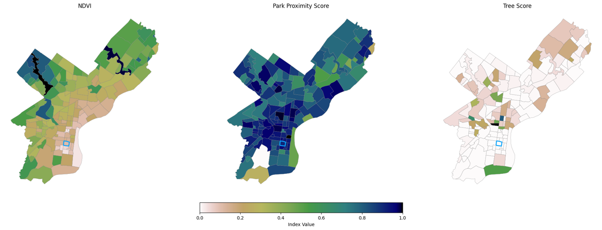

Environmental Score¶
The Environmental Score evaluates ecological and physical environmental quality in Philadelphia neighborhoods.
It uses three equally weighted indicators calculated at the census-tract level and then aggregated to neighborhoods:
- Vegetation Health (NDVI)
- Proximity to Parks & Green Space
- Urban Tree Canopy Coverage
All indicators are normalized to a 0–1 scale, where higher values represent more favorable environmental conditions.
Indicators¶
1. Vegetation Health (NDVI)¶
Calculated from Landsat 8 Surface Reflectance imagery:
Min–Max normalization:
2. Proximity to Parks¶
Distances from tract centroids to nearest park are computed using a KD-Tree.
3. Urban Tree Canopy¶
Tree canopy coverage is estimated using PPR’s 2015 tree canopy points.
Tree density is calculated per tract as:
and normalized as:
Composite Environmental Score¶
The final environmental domain score is the equal-weighted average of NDVI, park proximity, and tree canopy:
Neighborhood values are computed by averaging tract-level environmental scores within each neighborhood boundary.
Visualizations¶
Neighborhood Environmental Score Map¶

NDVI: Passyunk Square ranks low on the citywide NDVI distribution, indicating limited vegetation health relative to other neighborhoods.
Proximity to Parks: The neighborhood has moderate access to parks, with several reachable on foot but fewer large green spaces nearby.
Tree Canopy: Tree coverage is sparse in Passyunk Square, lowering its overall environmental domain score.